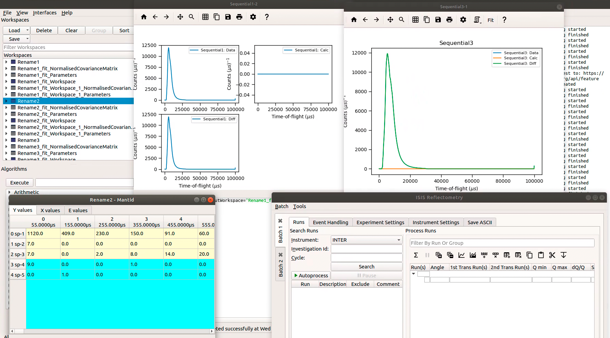

Project Recovery Testing#
Project Recovery test#
Preparation
Before running these tests, open
File > Settings > General > Project Recoveryand setEnabledto true,Time between recovery checkpointsto 2 seconds andTotal number of checkpointsto 5. Further instructions can be found on the Project Recovery concepts page.Download the ISIS sample dataset from the Downloads page.
The files
INTER000*andSXD23767.raware in the ISIS sample data.Include the directory containing the test files in your Managed User Directories.
Set your facility to ISIS.
Set up a save directory to store output for comparison, referred to as
testing_directorybelow.Note that if you have error reporting enabled, simply select
Do not share informationin the Error Reporter dialog.Restart Workbench to ensure all changes are applied.
Time required 15 - 30 minutes
Simple tests
Open MantidWorkbench
Right-click in the Messages Box and set Log level to Debug
Currently, all that should be printed is Nothing to save
Run the following command to create a simple workspace:
CreateWorkspace(DataX=range(12), DataY=range(12), DataE=range(12), NSpec=4, OutputWorkspace='NewWorkspace')
The Messages box should now be printing Project Recovery: Saving started and Project Recovery: Saving finished on alternate lines
Now run this script:
Load(Filename='INTER00013464.nxs', OutputWorkspace='INTER1')
Load(Filename='INTER00013469.nxs', OutputWorkspace='INTER2')
Load(Filename='INTER00013469.nxs', OutputWorkspace='INTER3')
RenameWorkspace(InputWorkspace='INTER2', OutputWorkspace='Rename2')
RenameWorkspace(InputWorkspace='INTER1', OutputWorkspace='Rename1')
RenameWorkspace(InputWorkspace='INTER3', OutputWorkspace='Rename3')
Fit(Function='name=DynamicKuboToyabe,BinWidth=0.05,' 'Asym=5.83382,Delta=5.63288,Field=447.873,Nu=8.53636e-09', InputWorkspace='Rename1', IgnoreInvalidData=True, Output='Rename1_fit', OutputCompositeMembers=True, ConvolveMembers=True)
Fit(Function='name=ExpDecayMuon,A=4306.05,Lambda=0.458289', InputWorkspace='Rename2', IgnoreInvalidData=True, Output='Rename2_fit', OutputCompositeMembers=True, ConvolveMembers=True)
Fit(Function='name=Abragam,A=-500.565,Omega=944.105,Phi=-2.97876,Sigma=230.906,Tau=5.54415e+06', InputWorkspace='Rename1_fit_Workspace', CreateOutput=True, Output='Rename1_fit_Workspace_1', CalcErrors=True)
Fit(Function='name=Abragam,A=343210,Omega=-91853.1,Phi=-1.51509,Sigma=11920.5,Tau=2.80013e+13', InputWorkspace='Rename2_fit_Workspace', CreateOutput=True, Output='Rename2_fit_Workspace_1', CalcErrors=True)
GroupWorkspaces(InputWorkspaces='Rename1_fit_Workspace_1_Workspace,Rename2_fit_Workspace_1_Workspace', OutputWorkspace='Rename3_fit_Workspaces')
RenameWorkspace(InputWorkspace='Rename1_fit_Workspace_1_Workspace', OutputWorkspace='Sequential1')
RenameWorkspace(InputWorkspace='Rename2_fit_Workspace_1_Workspace', OutputWorkspace='Sequential2')
Fit(Function='name=ExpDecayMuon,A=4306.05,Lambda=0.458289', InputWorkspace='Rename3', IgnoreInvalidData=True, Output='Rename3_fit', OutputCompositeMembers=True, ConvolveMembers=True)
Fit(Function='name=ExpDecayMuon,A=4306.05,Lambda=0.458289', InputWorkspace='Rename2_fit_Workspace', CreateOutput=True, Output='Rename2_fit_Workspace_1', CalcErrors=True)
Fit(Function='name=ExpDecayMuon,A=4306.05,Lambda=0.458289', InputWorkspace='Rename3_fit_Workspace', CreateOutput=True, Output='Rename3_fit_Workspace_1', CalcErrors=True)
GroupWorkspaces(InputWorkspaces='Rename2_fit_Workspace_1_Workspace,Rename3_fit_Workspace_1_Workspace', OutputWorkspace='Rename3_fit_Workspaces')
RenameWorkspace(InputWorkspace='Rename3_fit_Workspace_1_Workspace', OutputWorkspace='Sequential3')
RenameWorkspace(InputWorkspace='Rename2_fit_Workspace_1_Workspace', OutputWorkspace='Sequential4')
Fit(Function='name=ExpDecayMuon,A=4306.05,Lambda=0.458289', InputWorkspace='Rename3_fit_Workspace', CreateOutput=True, Output='Rename3_fit_Workspace_1', CalcErrors=True)
Fit(Function='name=ExpDecayMuon,A=4306.05,Lambda=0.458289', InputWorkspace='Rename1_fit_Workspace', CreateOutput=True, Output='Rename1_fit_Workspace_1', CalcErrors=True)
GroupWorkspaces(InputWorkspaces='Rename3_fit_Workspace_1_Workspace,Rename1_fit_Workspace_1_Workspace', OutputWorkspace='Rename3_fit_Workspaces')
RenameWorkspace(InputWorkspace='Rename3_fit_Workspace_1_Workspace', OutputWorkspace='Sequential5')
RenameWorkspace(InputWorkspace='Rename1_fit_Workspace_1_Workspace', OutputWorkspace='Sequential6')
Wait a few seconds, then provoke a crash by executing the Segfault algorithm with
DryRunset to False.Restart MantidWorkbench
You should be presented with the Project Recovery dialog
Choose Yes
This should re-populate your workspace dialog and pop up a recovery script in the script window
Testing many workspaces
Open up MantidWorkbench
Run the following script:
from pathlib import Path
testing_directory=Path('<path-to-test>')
# <path-to-test> is the location of a directory for saving workspaces for comparison later
# e.g. C:\Users\abc1234\Desktop\test_proj_rec\
CreateWorkspace(DataX=range(12), DataY=range(12), DataE=range(12), NSpec=4, OutputWorkspace='0Rebinned')
for i in range(100):
RenameWorkspace(InputWorkspace='%sRebinned'%str(i), OutputWorkspace='%sRebinned'%str(i+1))
for i in range(300):
CloneWorkspace(InputWorkspace='100Rebinned', OutputWorkspace='%sClone'%str(i))
SaveCSV(InputWorkspace='299Clone', Filename=str(testing_directory / 'Clone.csv'))
Wait a few seconds, then provoke a crash by executing the Segfault algorithm
Restart MantidWorkbench
You should be presented with the Project Recovery dialog
Choose Yes
This should re-populate your workspace dialog and pop up a recovery script in the script window
Run the following script:
from pathlib import Path
testing_directory=Path('<path-to-test>')
SaveCSV(InputWorkspace='299Clone', Filename=str(testing_directory / 'Clone_r.csv'))
Compare the contents of Clone.csv and Clone_r.csv, they should be the same
Testing workspaces of different types
Open up MantidWorkbench
Run the following script:
from pathlib import Path
testing_directory=Path('<path-to-test>')
Load(Filename=r'SXD23767.raw', OutputWorkspace='SXD23767')
ConvertToDiffractionMDWorkspace(InputWorkspace='SXD23767', OutputWorkspace='SXD23767_MD', OneEventPerBin=False, SplitThreshold=30)
DeleteWorkspace("SXD23767")
multi_d = RenameWorkspace('SXD23767_MD')
peaks = FindPeaksMD(InputWorkspace='multi_d', PeakDistanceThreshold=0.4, MaxPeaks=10,
PeakFindingStrategy='NumberOfEventsNormalization', SignalThresholdFactor=10,
OutputType='Peak', OutputWorkspace='SingleCrystalPeakTable', EdgePixels=1)
long1=CreateMDHistoWorkspace(Dimensionality=2, Extents='-3,3,-10,10', SignalInput=range(0,10000), ErrorInput=range(0,10000),\
NumberOfBins='100,100', Names='Dim1,Dim2', Units='MomentumTransfer, EnergyTransfer')
long2=CreateMDHistoWorkspace(Dimensionality=2, Extents='-3, 3, -10, 10', SignalInput=range(0, 10000), ErrorInput=range(0, 10000),\
NumberOfBins='100, 100', Names='Dim1, Dim2', Units='MomentumTransfer, EnergyTransfer')
long3=long1+long2
DeleteWorkspace("long1")
DeleteWorkspace("long2")
long4=long3.clone()
DeleteWorkspace("long3")
CloneWorkspace(InputWorkspace='long4', OutputWorkspace='Clone')
ConvertMDHistoToMatrixWorkspace(InputWorkspace='Clone', OutputWorkspace='Clone_matrix')
SaveCSV('Clone_matrix' , str(testing_directory / 'method_test.csv'))
DgsReduction(SampleInputFile='MAR11001.raw', IncidentEnergyGuess=12, OutputWorkspace='ws')
Rebin(InputWorkspace='ws', OutputWorkspace='rebin', Params='0.5')
Rebin(InputWorkspace='rebin', OutputWorkspace='rebin', Params='0.6')
Rebin(InputWorkspace='rebin', OutputWorkspace='rebin', Params='0.7')
Rebin(InputWorkspace='rebin', OutputWorkspace='rebin', Params='0.8')
RenameWorkspace(InputWorkspace='rebin', OutputWorkspace='renamed')
SaveCSV('renamed', str(testing_directory / 'rebin_test.csv'))
long4 *= 4
long4 += 3.00
ConvertMDHistoToMatrixWorkspace(InputWorkspace='long4', OutputWorkspace='long4_matrix')
SaveCSV('long4_matrix', str(testing_directory / 'test_binary_operators.csv'))
Force a crash by executing the Segfault algorithm
Restart MantidWorkbench
You should be presented with the Project Recovery dialog
Choose Yes
from pathlib import Path
testing_directory=Path('<path-to-test>')
SaveCSV('Clone_matrix', str(testing_directory / 'method_test_r.csv'))
SaveCSV('long4_matrix', str(testing_directory / 'test_binary_operators_r.csv'))
Compare the contents of
/test_binary_operators.csvand/test_binary_operators_r.csv, they should be the sameCompare the contents of
/method_test.csvand/method_test_r.csv, they should be the same
Recovering plots and windows
Open MantidWorkbench - make sure no other instances of MantidWorkbench are running
Run the large script from test 1
In the workspace window right-click the
Sequential3workspace and choose Plot spectrumChoose Plot All
In the workspace window right-click the
Sequential1workspace and choose Plot spectrumChange Plot type from individual to Tiled, and again click Plot all
In the workspace window right-click the
Rename2workspace and select Show DataIn the top toolbar, navigate to
Interfaces > Reflectometryand open theISIS ReflectometryinterfaceIn the top toolbar, navigate to
Interfaces > Diffractionand open theEngineering Diffractioninterface.

Force a crash by executing the Segfault algorithm
Restart MantidWorkbench
You should be presented with the Project Recovery dialog
Choose Yes
Mantid should reload the workspaces and reopen plots and interfaces (including the show data interface). You should see these all reappear in the main screen (they may have been reopened, but minimised).
(Note at time of writing, only ISIS Reflectometry and Engineering Diffraction are supported by Project Save / Recovery)
Test multiple instances of Mantid running
Launch 2 instances of MantidWorkbench
Run the script on the first instance:
CreateWorkspace(DataX=range(12), DataY=range(12), DataE=range(12), NSpec=4, OutputWorkspace='Instance 1')
Run this script on the other instance:
CreateWorkspace(DataX=range(12), DataY=range(12), DataE=range(12), NSpec=4, OutputWorkspace='Instance 2')
Crash the first instance of Mantid with Segfault
Do not exit the second instance of Mantid
Restart MantidWorkbench
You should be presented with a Project Recovery dialog, offering to attempt a recovery - choose Yes
Instance 1 should appear in the workspace dialog
Opening script only
Open MantidWorkbench
Run the large script from test 1
In the workspace window right-click the
Sequential3workspace and choose Plot spectrumChoose Plot All
Force a crash by executing the Segfault algorithm
Restart MantidWorkbench
You should be presented with the Project Recovery dialog
Choose
Just open in script editorMantid should open the script editor, with a script named ordered_recovery.py
Run this script, it should repopulate the workspaces dialog, but not open any figures
Not attempting recovery
Open MantidWorkbench
Run the large script from test 1
In the workspace window right-click the
Sequential3workspace and choose Plot spectrumChoose Plot All
Force a crash by executing the Segfault algorithm
Restart MantidWorkbench
You should be presented with the Project Recovery dialog
Choose
Start mantid normallyMantid should open as normal
With the Messages box at Debug level you should see the project saver starting up again
Check old history is purged
Open MantidWorkbench
CreateWorkspace(DataX=range(12), DataY=range(12), DataE=range(12), NSpec=4, OutputWorkspace='NewWorkspace')
RenameWorkspace(InputWorkspace='NewWorkspace', OutputWorkspace='Rename2')
Save the workspace as a .nxs file, by highlighting the
Rename2workspace and selectingSave Nexusat the top of the Workspaces toolbox.Close Mantid normally
Restart MantidWorkbench
Re-open the workspace from the saved .nxs file
Wait for saving
Force a crash by executing the Segfault algorithm
Restart MantidWorkbench
Choose
Just open in script editorMantid should open a script named
ordered_recovery.pyin the script editorThis should contain only the
Loadcommand and no previous history (to see full history, run the script, right-click on the workspace and selectShow History)
Finally, test out a few ideas of your own. Note that some more niche aspects of plotting are not saved, such as 3D plots, and Sliceviewer is also not supported by project save/recovery.
Complete! Thank you for testing! Make sure to raise any issues you found on Github.